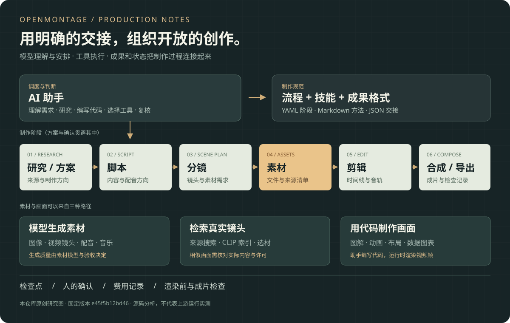
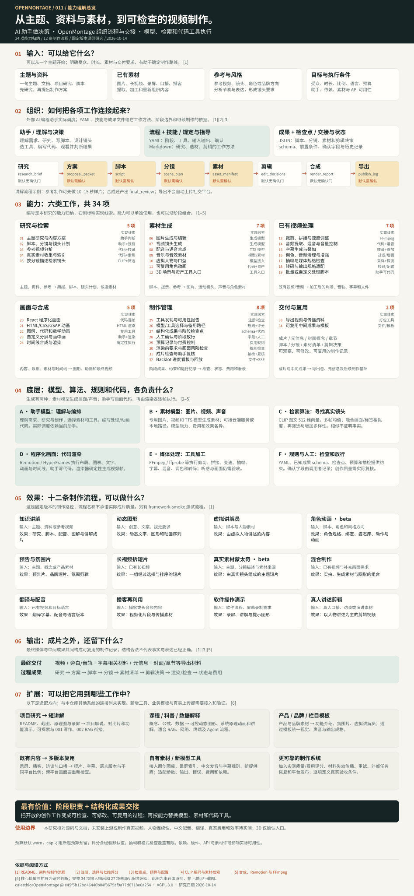

能力是什么？
覆盖主题研究、方案、脚本与分镜，图片/视频/配音和音乐素材，参考视频分析与真实镜头检索，已有视频裁剪、字幕、混音、调色、转码，以及程序化画面、时间线合成、预算、检查和导出。本研究归纳 34 项能力。
展开能力说明 ↓从一个想法，到可检查的视频制作过程
从主题、资料、参考视频或已有素材开始，借助 AI 助手完成研究、脚本、分镜、素材准备、剪辑与成片。OpenMontage 连接制作方法、模型接口、本地工具和阶段成果，让过程可检查、可修改并能复用。
固定版本源码研究 · 2026.10.14 · e45f5b12bd46

先读四个核心问题，再看完整图与证据
覆盖主题研究、方案、脚本与分镜，图片/视频/配音和音乐素材，参考视频分析与真实镜头检索，已有视频裁剪、字幕、混音、调色、转码，以及程序化画面、时间线合成、预算、检查和导出。本研究归纳 34 项能力。
展开能力说明 ↓助手读取 YAML 中的阶段顺序、输入输出、允许工具和确认要求，再按 Markdown 技能完成工作；研究简报、脚本、分镜、素材清单和剪辑决策以 JSON 等文件交接，执行工具生成媒体，检查点记录进度并校验部分前置条件。
展开原理说明 ↓最值得复用的是阶段职责与结构化成果交接：把开放创作组织成可检查、可修改、可保存和可复用的过程，使工具选择有依据、返工有入口。其次是按能力替换执行工具和记录状态费用；实际省时、成本和质量优势尚未比较。
展开核心价值说明 ↓可探索知识库/RAG 资料到专题解说或课程视频、自有截图录屏素材库、中文发音与字幕规则、统一栏目模板、新生成模型和工具、实测质量评分、材料失效与外部任务恢复，以及多渠道交付。与写作、RAG 或 BaoCut 的衔接需适配格式、接口和验收，尚未集成。
展开可扩展场景说明 ↓一张图，把输入、能力与实现连起来
从上到下阅读：输入 → 流程组合 → 六类能力 → 底层实现 → 十二种制作效果 → 输出 → 扩展场景。 图中区分助手判断、素材模型、检索算法、代码执行与规则检查，并标明核心价值和使用边界。

依据与完整来源见来源与验证；新增理解见产品与项目对比。图中扩展为后续适配方向；真实上游安装、成片、中文效果、费用和效率仍待验证。
把我们讨论的本质先说清楚
可以把它理解为：供 AI 编程助手使用的一套视频制作技能、流程与工具系统。 助手是实际调度者；视频、图像、配音模型负责对应素材能力；代码工具负责处理和渲染。
理解与决策
理解需求、研究主题、写脚本、设计镜头、选择工具、编写代码、检查结果。
通常由你使用的 Codex、Claude Code 等环境提供。
流程与交接
提供阶段规范、制作技能、成果格式、工具接口、预算记录、检查点与制作看板。
项目核心的工程价值集中在这一层。
素材与执行
图像、视频、语音模型生成素材；素材站提供镜头；FFmpeg、Remotion 等完成加工和合成。
需要相应依赖、权限、硬件或 API 配置。
模型理解、工具执行、保存成果是共同结构。具体差异要看工作对象、谁安排步骤、成果如何交接、人怎样接手，以及哪些要求由代码检查。OpenMontage 将这些方法落实到视频制作领域；下面的项目对比进一步说明各自的位置。
可以从主题、文档、图片、参考视频、已有长视频、播客或录屏需求开始。主题输入会先经过研究与方案；材料输入需要适配提取方式。成片目标、时长、受众和风格越明确，制作路径越容易确定。部分创作阶段默认要求人的确认。
分成两层：上层助手读取技能和流程，运行制作工具；下层生成工具再请求专门的图片、视频或语音模型，也可采用本地路径。技能文件是工作指导，完整执行需要工具和运行环境配合。
覆盖知识讲解、软件演示、真实素材蒙太奇、长视频拆短片、播客再利用、翻译配音、真人口播处理和程序化图形。已有视频的剪辑、字幕、混音、调色与转码也可以单独使用。短剧的角色、表演与连续性仍需要额外验收。
是。渲染和素材处理由工具执行；重要的制作判断发生在研究、脚本、分镜、选材与剪辑决策中。OpenMontage 为这些判断提供分工、交接材料和检查规则。
研究判断 · 按你的使用目标排序
它把一个开放的创作任务变成有阶段目标、有成果文件、有执行工具、有检查依据的工作。模型的判断因此有了明确的工作边界，制作记录也能留下来。
脚本交给分镜，分镜交给素材，素材与剪辑决策交给渲染器。每一步都有可检查的成果，不必一直从聊天记录中猜测下一步需要什么。
优先研究：输入输出、成果格式、前置条件制作阶段需要“语音”或“画面”能力，再从当前可用工具中选择路径。保持流程结构的同时，可以调整素材来源、提供商和程序化画面方案。
优先研究：注册表、选择器、参数适配与替代路径保存当前进度与中间成果，记录费用，检查前置阶段，并在创作节点等待确认。问题更容易定位，也为中断后的继续制作提供依据。
优先研究：哪些规则由代码检查，哪些仍由模型判断减少重复交代制作要求；复用已有模板与素材；修改某个阶段时有明确入口；能回看工具选择与花费。是否真正省时、便宜、少返工，需要在你的任务上记录并比较。
输入 → 方法 → 输出 → 边界
下表区分已有工具、流程能力和定制扩展。代码或文档中存在能力，不代表你当前环境已具备全部依赖，也不代表已经通过本研究的运行验证。
完整能力清单
| 能力 | 输入 / 输出 | 实现方法 | 使用边界 | 证据 |
|---|---|---|---|---|
| 研究与检索主题研究与内容方案 | 输入：主题、受众、目标 输出：有来源的研究简报与方案 | 助手读取阶段技能，使用自身研究与写作能力 | 资料引用不自动保证结论正确；需核对原文 | ↗ |
| 研究与检索脚本、分镜与镜头计划 | 输入：已选方案、资料 输出：结构化脚本和 scene_plan | 阶段技能及成果格式约定 | 创作质量由助手判断；格式正确不等于表达好 | ↗ |
| 研究与检索参考视频分析 | 输入：视频 URL 或本地文件 输出：转录、镜头、关键帧与节奏信息 | 下载、字幕、场景检测、抽帧与语音转录 | 平台下载可用性依环境变化；视觉解释由助手完成 | ↗ |
| 研究与检索真实素材收集与索引 | 输入：查询词、来源、筛选条件 输出：本地素材、缩略图、向量与来源记录 | corpus_builder 连接来源并建立素材库 | 需要网络与相关依赖；素材许可须逐项核查 | ↗ |
| 研究与检索按分镜描述检索镜头 | 输入：描述和候选素材库 输出：有分数的候选镜头与多样性选择 | CLIP 画面/文字向量、标签融合与筛选 | 相似度代表匹配线索，不证明事件、地点或事实 | ↗ |
| 素材生成图片生成与编辑 | 输入：提示、参考图和风格要求 输出：用于画面的图像素材 | 云端接口或本地生成工具 | 依赖所接模型；文字、角色和产品一致性需检查 | ↗ |
| 素材生成视频镜头生成 | 输入：提示、图像或其他参考素材 输出：独立的运动镜头 | 视频选择器调用可用提供商 | 不同提供商支持的输入、时长和控制不同 | ↗ |
| 素材生成配音与语音合成 | 输入：脚本、语言、声音与表演方向 输出：旁白音频 | TTS 选择器、云端服务或 Piper 等本地路径 | 发音、情绪、停顿和中文效果需试听 | ↗ |
| 素材生成音乐与音效素材 | 输入：风格、场景与声音要求 输出：音乐和音效，或选用已有素材 | 音乐生成工具与素材路径 | 可用性、费用和授权由实际来源决定 | ↗ |
| 素材生成虚拟人物与口型 | 输入：人物素材、脚本和音频 输出：人物讲述与口型相关画面 | 头像/人物制作流程及工具接入 | 并非所有环境都可用；人物表现需人工检查 | ↗ |
| 素材生成可复用角色动画 | 输入：角色规格、动作和时间线 输出：角色、绑定、姿态与本地动画 | character-animation 的角色与动作成果 | beta；需要制作资产，动作质量未实测 | ↗ |
| 素材生成3D 场景与资产工具入口 | 输入：场景、资产和镜头需求 输出：3D 素材或可编辑场景制作路径 | Blender/Three.js/3D 生成相关工具目录与示例 | 属辅助能力，不额外计为第 13 条制作流程；未运行验证 | ↗ |
| 已有视频处理裁剪、拼接与速度调整 | 输入：已有视频、时间点和顺序 输出：重新组织的片段 | video_trimmer、FFmpeg | 编码格式和精确剪切要求可能需要重新编码 | ↗ |
| 已有视频处理音频提取、混音与音量控制 | 输入：视频、语音、音乐和音效 输出：混合音轨与成片声音 | audio_mixer、音量淡入淡出与语音压低背景音乐 | 参数仍需试听；不能仅凭音量推断清晰度 | ↗ |
| 已有视频处理字幕生成与叠加 | 输入：转录时间戳、文稿和字幕样式 输出：字幕文件或画面字幕 | 字幕工具、FFmpeg 或 Remotion 字幕组件 | 字幕准确性、断句、字体和遮挡需检查 | ↗ |
| 已有视频处理调色、音频清理与增强 | 输入：已有视频或音频 输出：调色、降噪、响度调整等结果 | FFmpeg 处理工具与可选增强模型 | 修复程度依工具和素材；增强工具并非全部可用 | ↗ |
| 已有视频处理抽帧与媒体规格检查 | 输入：视频文件 输出：代表帧、时长、分辨率、音轨等信息 | frame_sampler、FFmpeg/ffprobe | 抽样不能覆盖每一帧或证明内容质量 | ↗ |
| 已有视频处理转码与输出规格适配 | 输入：视频与目标比例/规格 输出：编码、分辨率、帧率等符合目标的文件 | FFmpeg 与媒体规格配置 | 横竖屏画面重构可能需要另行设计裁剪和布局 | ↗ |
| 已有视频处理批量或自定义处理脚本 | 输入：一批素材与明确处理要求 输出：脚本以及批量处理结果 | 流程允许 custom_scripts，由助手编写和运行 | 定制扩展；不是每种任务都有开箱即用预设，需验证脚本 | ↗ |
| 画面与合成React 程序化画面 | 输入：素材、数据、布局与时间线 输出：图表、文字、叠加层与逐帧动画 | Remotion 组件与参数化合成 | 代码和时间线必须经过渲染、资源与视觉验证 | ↗ |
| 画面与合成HTML/CSS/GSAP 动画 | 输入：素材与动画设计 输出：动态图形与浏览器渲染视频 | HyperFrames 制作路径与合成工具 | 运行时在方案阶段选择；不同流程兼容程度不同 | ↗ |
| 画面与合成图解、代码和数学动画 | 输入：原理、代码或公式 输出：供讲解使用的图形和动画 | diagram_gen、code_snippet、math_animate 等工具 | 表达与科学正确性需复核；依赖各工具安装 | ↗ |
| 画面与合成自定义分屏与画中画 | 输入：布局和多路素材 输出：自定义合成代码及渲染画面 | 助手按扩展协议编写 Remotion 合成 | 可扩展能力，需要编写和验证，不保证所有布局已有模板 | ↗ |
| 画面与合成时间线合成与渲染 | 输入：剪辑决策、素材清单和音轨 输出：最终视频与渲染记录 | video_compose 路由到选定渲染运行时 | 实际资源、依赖和时间线正确性决定能否成功 | ↗ |
| 制作管理工具发现与可用性报告 | 输入：当前环境和工具模块 输出：能力、提供商与依赖状态 | 注册表发现工具并报告 support_envelope | 声明可用不等于所有远端请求都将成功 | ↗ |
| 制作管理模型/工具选择与备用路径 | 输入：任务、约束、预算与可用工具 输出：候选排名与选择记录 | 选择器过滤、七维评分和备用工具查询 | 部分分数是经验默认值；备用路径需满足原交付要求 | ↗ |
| 制作管理结构化成果与阶段检查点 | 输入：阶段成果、状态和确认信息 输出：JSON 状态、历史和下一阶段依据 | 格式校验、前置阶段与确认检查 | 按正常接口提供约束；格式和确认字段不等于真实验收 | ↗ |
| 制作管理人工确认与阶段放行 | 输入：阶段成果、默认确认门和人的反馈 输出：等待确认或允许继续的制作状态 | 流程定义与检查点 human_approved 字段检查 | 工具检查的是记录字段；真实确认与成果验收仍需助手和人落实 | ↗ |
| 制作管理预算记录与付费控制 | 输入：估算费用、操作和预算模式 输出：预留、实际费用与预算提示或阻断 | estimate → reserve → reconcile | 默认 warn；cap 才阻断超预算预留，依赖费用路径正确接入 | ↗ |
| 制作管理渲染前要求与画面风险检查 | 输入：剪辑决策和分镜计划 输出：检查结果与部分阻断条件 | 交付要求、幻灯片风险和渲染规则 | 规则依赖输入字段，部分缺失或异常会警告/跳过 | ↗ |
| 制作管理成片检查与助手复核 | 输入：渲染视频及相关文稿 输出：规格、抽帧、音量、字幕等检查结果 | ffprobe、抽帧、音频分析与可选转录比较 | 不是完整视觉/语义验收；并非每项问题都导致失败 | ↗ |
| 制作管理Backlot 进度看板与回放 | 输入：项目文件、事件和检查点 输出：阶段、分镜、素材、费用与历史展示 | 文件监听、SSE 通知和浏览器刷新 | 只读看板；确认通常在聊天中进行，回放不是再次制作 | ↗ |
| 交付与复用导出视频与传播资料 | 输入：成片、方案与最终检查 输出：视频、元信息和封面/章节等导出材料 | publish 阶段与 export_bundle 工具入口 | 导出不等于已自动上传任何社交平台；未运行验证 | ↗ |
| 交付与复用可复用中间成果与模板 | 输入：已保存的脚本、素材和风格规则 输出：后续制作的可复用基础 | 结构化成果、风格规则和参数化合成 | 改动前置材料可能要求重新制作下游成果 | ↗ |
没有匹配项。尝试清空搜索或选择“全部”。
完整制作任务的不同入口
这里按固定版本的流程目录计数：12 条制作流程，另有一条 framework-smoke 框架测试流程。流程是否可以直接运行，要结合工具可用性核对；名称不等于成片质量承诺。
animated-explainer输入：主题、资料或参考视频
输出：研究、脚本、配音、图解与讲解成片
研究与方案先行；多个创作阶段默认要求确认。 流程定义 ↗
animation输入：创意、文案、视觉要求
输出：动态文字、图形和动画序列
适合概念表达与产品演示，画面可由代码组织。 流程定义 ↗
avatar-spokesperson输入：脚本与人物素材
输出：由虚拟人物讲述的内容
依赖实际可用的人像、语音和口型工具。 流程定义 ↗
character-animation输入：脚本、角色和风格方向
输出：角色规格、绑定、姿态库、动作与动画
beta；本地 SVG/GSAP 等路径，需制作角色与动作。 流程定义 ↗
cinematic输入：主题、概念或产品素材
输出：预告片、品牌短片、氛围剪辑
质量依赖素材、镜头计划与后续合成。 流程定义 ↗
clip-factory输入：已有长视频
输出：一组经过选择与排序的短片
精彩程度和剪辑取舍仍需判断与验收。 流程定义 ↗
documentary-montage输入：主题、分镜描述与素材来源
输出：由真实镜头组成的主题短片
beta；支持素材库检索及直接搜索路径。 流程定义 ↗
hybrid输入：已有视频与补充画面需求
输出：实拍、生成素材与图形的组合
已有素材与新素材需要统一节奏和风格。 流程定义 ↗
localization-dub输入：已有视频和目标语言
输出：翻译字幕、配音与语言版本
翻译、发音、字幕同步和口型效果需实测。 流程定义 ↗
podcast-repurpose输入：播客或长音频内容
输出：视频化片段与传播素材
结合音频内容选择和画面组织。 流程定义 ↗
screen-demo输入：软件流程、屏幕录制需求
输出：录屏、讲解与提示图形
录制和软件操作能力取决于运行环境。 流程定义 ↗
talking-head输入：真人口播、访谈或演讲素材
输出：以人物讲述为主的剪辑视频
可结合字幕、补充镜头和音频处理。 流程定义 ↗
长视频拆短片，需要先理解已有内容；主题讲解需要先研究与写脚本；角色动画额外涉及角色设计、绑定与动作。它们共用工具和状态机制，但阶段顺序与交付物可以不同。
让阶段、成果和检查连起来
阶段顺序、输入输出、工具、通过条件、人的确认与制作限制。
研究、脚本、分镜、选材、剪辑等不同职责的工作指导。
脚本、素材、剪辑决策和检查点，配合格式与阶段校验。
以讲解视频流程为例，点击任意阶段查看交接关系。下方按钮只演示阶段前置条件和确认，不调用模型、不生成素材、不制作视频。
助手研究主题，整理来源和不同讲解角度。
输入：主题与受众；输出：research_brief；下一阶段据此提出制作方案。
这里用简化规则解释真实检查点机制；没有验证文件存在、工具执行、费用或创作质量。确认按钮代表教学中的假设确认，不构成任何实际操作授权。
阶段是否有效、已知成果格式是否匹配、前置阶段是否完成、必要确认字段是否存在；渲染工具还执行部分媒体和计划检查。扩展阶段和未知成果有兼容分支，全部自然语言要求并未自动校验。
方案是否有区别、脚本是否清楚、镜头是否合适、配音是否自然、画面是否准确。自然语言的审查要求需要实际执行和验收。
依据：阶段输入输出定义、检查点保存与前置检查。检查点为继续制作提供依据；修改前置材料可能需要重做下游，跨进程外部任务也需另行恢复。
共同流程，不同素材路径
素材建库时下载候选素材、抽取代表帧，把画面与标签转换成向量。分镜描述也转换成文字向量，再融合画面与标签相似度检索候选镜头，并筛选运动程度、避免重复或增加多样性。最后仍由助手和人决定实际选用。
固定实现采用 CLIP ViT-B/32，将图片和文字映射到 512 维向量，并以多帧均值表示片段。这个表示便于搜索相似画面，但对复杂动作、事件和时间关系的理解有限。
候选先经过可用性和任务约束筛选，再按任务适配 30%、预期质量 20%、控制能力 15%、可靠性 15%、成本 10%、延迟 5%、连续性 5% 加权。工具可以提供实测质量、成功率和延迟；缺少时使用稳定性标签、运行类型与关键词匹配等经验值。
因此排名可解释，但尚不能当作客观质量榜。“沿用同一提供商”也只是连续性的经验信号，无法保证角色或产品一致。查看评分源码
两种不同的编程能力
处理已有媒体
助手调用现有工具，或编写脚本组织裁剪、拼接、变速、抽帧、字幕、混音、转码与批量处理。
根据给定时间点拆分一段录屏，再统一尺寸、加入字幕与配音，输出教程视频。
生成程序化画面
助手以代码描述布局、图形、文字、动画与时间线，再由渲染器生成视频帧。可做动态图表、分屏、画中画与原理动画。
让检索请求依次经过文档、片段索引、模型和引用结果，用动画解释 RAG 流程。
写代码的能力来自助手。 OpenMontage 提供制作指导、工具接口与扩展约定。固定流程允许自定义脚本和风格；自定义布局可能要另写代码，具体任务需测试，不能把“支持扩展”理解为已有全部预设。
结合你的项目研究，而不是泛泛列功能
用研究 README、原理图和网页录屏，制作 60–90 秒中文解说。固定“能力 → 原理 → 使用 → 边界”结构，观众再进入详细文档。
收益验证：制作耗时、人工修改次数、事实错误、图文匹配和总费用。
已有资料和经过核对的文稿可以进入讲解流程。论文、技术或农业科普尤其适合使用真实来源和程序化图解；需要资料选择与事实审核。
高价值部分：把准确知识转成脚本与可理解画面。
对已有素材做字幕、混音、片段选择和短内容重组。若任务只是简单转码或剪切，直接调用处理工具也可完成。
重复制作、复杂交接时，完整流程的价值更明显。
这是后续衔接设想。本仓库尚未把 001 长文写作、002 RAG 与上游视频工具连接成真实自动化系统。
阶段职责、成果契约、工具发现、检查点与验收分工，同样适用于项目研究、报告生成和实验流程。你可以先借鉴组合方式，再决定是否维护完整视频环境。
本仓库既有研究 · 架构定位比较
OpenMontage 重点组织制作流程与阶段交接；BaoCut 重点组织同一份可编辑作品上的人机协作。 两者的视频处理能力有不少重叠，主要差异体现在成果、状态和人的参与方式。
这里以 OpenMontage 为基准，对比本仓库已有的 10 个项目。依据是各自固定版本的研究记录；Claude Managed Agents 和 Vibe42 属于公开产品资料研究。下面没有质量、速度或费用排名，也没有进行相同任务的端到端实测。
| 项目 / 研究依据 | 输入 → 输出 | 与 OpenMontage 的区别 | 可借鉴的设计 |
|---|---|---|---|
| 视频制作OpenMontage ↗固定版本 e45f5b12bd46 | 输入：主题、资料、参考或已有媒体 输出：阶段成果、素材、成片与导出记录 | 外部助手按技能与 YAML 执行；用结构化成果连接制作阶段。是本表的比较基准。 | 阶段职责、成果交接、能力工具选择、制作检查。 |
| 可编辑作品BaoCut ↗固定版本 7aa049e82e13 | 输入：素材、创作目标、人工修改与位置反馈 输出：可编辑视频、字幕/音频、MP4 与便携项目 | AI 与人围绕当前作品继续编辑；UI 与工具接口进入同一套视频命令、事务和撤销机制。 | 状态共享、局部修改、人工接手、范围控制与撤销。 |
| 长文生成Infinite Bookshelf ↗固定版本 400b27217594 | 输入：主题、要求与参考笔记 输出：目录、书名、分节正文和 TXT/PDF 初稿 | Python 预设先后顺序和循环，模型生成文字；OpenMontage 的成果、执行工具与制作检查更多。 | 把重复写作方法固化为可复用流程。 |
| 资料检索Production Agentic RAG ↗固定版本 424a0eb99edf | 输入：文档、问题与检索参数 输出：相关片段、模型回答和来源链接 | 围绕文字资料的检索与回答依据；OpenMontage 把内容变成视听表达，其 CLIP 检索主要寻找画面。 | 资料索引、来源追溯、数据衔接和检索评测。 |
| 审查与证据Jev SEO ↗固定版本 55a184a3b0d0 | 输入：网址、页面快照与评估标准 输出：固定规则问题、模型判断和整改报告 | 围绕网页问题判断；固定规则和语义评估分工。OpenMontage 的检查服务于制作过程。 | 检查标准、证据、未知状态、整改和人工复核。 |
| 有限决策Hermes Jev Skills ↗固定版本 31f476cac497 | 输入：必要状态、明确问题与有限选项 输出：选择、评分或是否判断，供本地策略执行 | Jev 提供语义判断，代码施加约束并选择动作；OpenMontage 提供视频流程，现有工具评分含经验值。 | 把判断、选择、执行与验收分开，用真实任务校准策略。 |
| 任务运行Claude Managed Agents ↗公开资料核对 2026-10-14 | 输入：任务、Agent、工具与运行约束 输出：多线程成果、事件、运行状态和用量 | 通用多 Agent 编排与托管运行；模型可编写编排程序。OpenMontage 的主要贡献是视频领域知识与交接约定。 | 任务依赖、上下文交接、运行控制和失败处理。 |
| 软件调查REA ↗固定版本 ebaaa79ca02b | 输入：具体问题、对应版本的软件材料与观察条件 输出：代码/结构、关系、观察证据与分析结果 | 同样把领域工具接给助手，但围绕问题逐步调查；OpenMontage 围绕制作阶段形成作品。 | 版本、来源、观察/推导/推测与覆盖边界的记录方法。 |
| 模型接入Free Claude Code ↗固定版本 74d4ccfde724 | 输入：模型请求、协议与服务配置 输出：适配后的回答、工具指令和流式事件 | 统一模型入口、协议转换与转发；不定义视频制作步骤。更换助手模型和素材生成服务需分别适配。 | 模型可替换、协议适配、备用与接入管理。 |
| 会话工作台cmux ↗固定版本 cdbe99596fe1 | 输入：现有 Agent 会话、定向指令与状态事件 输出：可操作终端/网页、通知与控制结果 | 让人集中查看和控制多个现有 Agent；任务理解与工具执行仍由各 Agent 完成。 | 多会话可观察性、身份路由、交互与消息送达。 |
| 远程入口Vibe42 ↗公开资料核对 2026-10-14 | 输入：远程终端输入、操作与会话目标 输出：电脑中的执行结果、文件、状态和提醒 | 从手机/Web 接续电脑中的 Agent；负责跨设备交互与连接，业务制作由电脑端 Agent 与工具完成。 | 设备配对、授权、连接、持续会话与远程反馈。 |
项目名链接到固定源码或官方资料；版本标记来自本仓库已记录的研究。Jev SEO 行同时概括本仓库提取的审查实验；其自有模型接入是我们新增的适配。详细记录路径、版本与许可证可下载对比清单查看。
| 维度 | OpenMontage | BaoCut |
|---|---|---|
| 主要目标 | 把研究、方案、脚本、分镜、素材与合成组织成制作过程。 | 让人和 AI 围绕当前可编辑作品持续查看、修改和导出。 |
| 谁组织执行 | 外部助手读取技能与 YAML，选择工具并按阶段成果推进。 | 智能体经工具接口修改项目；人经 UI 操作，视频部分进入同一套命令和事务。 |
| 主要保存的成果 | 简报、脚本、分镜、素材清单、剪辑决策、检查点与渲染记录。 | 可编辑项目、时间线、当前修改状态、回执与撤销记录。 |
| UI 与人的参与 | Backlot 是只读制作看板；人在聊天与创作节点查看并确认成果。 | 人可预览、试听、直接编辑和撤销，也可指向位置或修改范围让 AI 继续处理。 |
| 修改入口 | 回到相应脚本、分镜、素材或剪辑决策，核对下游影响并重新合成。 | 在同一项目上定位字幕或片段，修改指定范围，再查看回执与撤销结果。 |
| 交付与继续编辑 | 成片、检查报告、导出目录和中间成果提供继续制作的依据。 | MP4、字幕、音频与可继续编辑的便携 .baocut 包；设计稿另有 HTML/PDF 导出。 |
| 最值得借鉴 | 阶段职责、成果契约、工具替换、状态与制作验收。 | 当前状态共享、人工接手、局部修改、范围控制、事务与撤销。 |
BaoCut 的同一命令、事务与撤销描述限定于视频部分；设计画布有独立运行时。两者都需要真实模型与实际成果验证，不能据文档推断每次人工改动都会被可靠保留。
同一目标，观察不同工作重点 · 教学案例
重点是从资料到成片，各阶段如何衔接与验收。
重点是人和 AI 如何基于当前作品继续协作。
这是工作方式的说明，没有制作真实样片。两者的项目结构与成果格式不同；把视频、字幕或音轨转入另一工具需要导入与适配，尚未验证直接互通。
RAG 查找文本片段，为回答补资料与来源。OpenMontage 的 CLIP 路线查找相似画面，为分镜准备镜头。画面匹配不能代替事实核查，文档来源也不会自动变成合适的镜头。
FCC 主要解决助手侧模型请求的协议、配置和转发。OpenMontage 的图片、视频和 TTS 提供商是素材执行路径。两类服务的能力、参数和接口要各自适配。
OpenMontage 的七维工具评分包含固定权重和经验值；Jev 接收状态与有限问题，返回语义判断。本地约束、候选选择和实际执行仍需要明确策略与验证。
这是后续组合设计，尚未接通。需要统一来源、素材、项目格式、模型接口、费用与验收，不能仅凭箭头认定已经兼容。
Jev Skills 提供有限判断与路由方法；FCC 提供模型连接与协议适配。是否采用应按任务和真实结果验证。
Managed Agents 提供任务编排思路；cmux 帮人管理已有会话；Vibe42 提供远程操作入口。业务制作仍由实际助手与工具承担。
Jev SEO 和 REA 可借鉴判断标准、证据、版本与未知的记录方法。网站规则、软件分析工具需要重新适配，才能用于视频领域。
学习视频任务的阶段组织，重点看 OpenMontage；学习人的接手和连续修改，重点看 BaoCut；再借鉴其他项目的检索、判断、接入、运行与证据设计。最终是否省时、便宜或少返工，需要用同一真实任务比较。
先建立一个可比较的基线
接研究资料、论文或 RAG 结果，保留可核查来源；形成自己的脚本与分镜模板。
封装新提供商，核对输入输出、费用、依赖、错误和任务约束；完善可用性报告。
增加真实质量、延迟与成功率记录，明确重试、预算、材料失效和最终验收策略。
环境与免费/本地路线见上游 README。没有付费生成接口时可以探索已有素材和程序化画面；“无需某类 API”不等于没有助手、硬件、下载与维护成本。
明确边界，才能判断值不值得用
助手读取规范并执行任务。代码提供部分校验；它没有替代助手完成所有调度判断，也不能保证每一条自然语言审查要求都被执行。
成果 schema 检查字段与结构；主题事实、来源支撑、画面含义、字幕准确性和审美质量需要另外核查。
缺少实测数据时，质量、可靠性、延迟等使用默认值。任务适配也涉及关键词和同义词匹配；排名需通过自己的任务验证。
成片工具做文件探测、四个位置抽帧、音量分析和可选文稿比较；部分视觉字段不是完整自动检测。缺少输入时某些检查会跳过，并非所有问题都阻断交付。
固定版本默认 warn；cap 才阻断超预算预留。费用估算、预留和核算还需要在实际调用链中正确使用。
部分流程处于 beta；下载平台、API、GPU、依赖与素材许可都影响执行。导出阶段不表示已经上传到任何平台。
上游许可证为 AGPL-3.0。本页使用原创说明与图示，并链接固定源码；将上游用于二次开发或服务化时，需核对具体许可要求及第三方素材许可。
研究结论与执行证据分开记录
源码 / 文档核对
上游执行 / 效果
网页验证与公开发布情况见研究文档与发布记录。网页交互解释流程，不连接上游 OpenMontage、不请求模型、不产出真实视频；网页发布与真实制作验证分别记录。
源码链接统一固定到 e45f5b12bd46440b04f3675af9a77d0718e6a254。架构文档中的旧数量与早期描述，以具体流程和代码为准；工具目录入口与逐行核对分别标明。